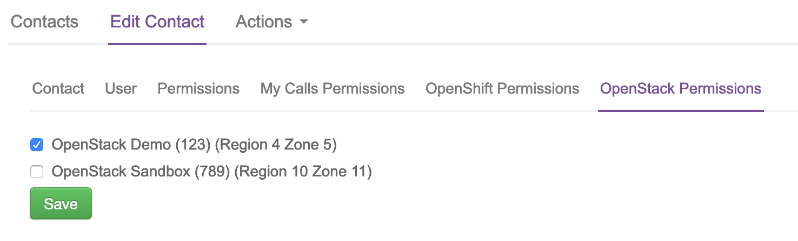

How to manage UKCloud for OpenStack accounts in the UKCloud Portal
Overview
This article shows how UKCloud Portal administrators can use the Portal to create user accounts for UKCloud for OpenStack and set access permissions.
Intended audience
To set OpenStack account permissions, you must be a UKCloud Portal administrator for the account that includes the OpenStack project.
Prerequisites
To give a user access to an OpenStack project, they must have a user account in the UKCloud Portal. For detailed steps for how to create a new Portal user, see How to create a new user in the UKCloud Portal.
Tip
When creating a Portal account for an OpenStack user, you may first need to switch to the account that contains the OpenStack project.
Note
After creating a new Portal user account, there may be a delay of a few minutes while the new user's information is synchronised around the system.
Assigning and revoking OpenStack permissions
To enable a user to work with an OpenStack project you must assign them permission to access the project. You can also revoke permission to remove a user's OpenStack access.
To assign or revoke OpenStack permissions:
Log in to the UKCloud Portal
For more detailed instructions, see the Getting Started Guide for the UKCloud Portal*.
Note
You must log in as a Portal administrator for the account that includes the OpenStack project.
If necessary, switch to the account that includes the OpenStack project.
In the Portal navigation panel, expand Contacts option and select All Contacts.

On the Contacts page, use the Search field to find the user to whom you want to assign or revoke OpenStack permissions and then click the Edit button.

On the Edit contact page, select the OpenStack Permissions tab.

You'll see a list of the OpenStack projects within your organisation. There's a separate entry for each region a project is in.
Select the check box for the project and region to which you want to grant the user access. Deselect the check box to revoke access permissions.

When you're done, click the Save button.
Accessing OpenStack from the UKCloud Portal
After your OpenStack account has been set up, you'll see a OpenStack Cloud option in the Portal navigation panel. This option links through to the OpenStack Horizon dashboard.
To access OpenStack:
In the UKCloud Portal, if necessary, switch to the account that includes the OpenStack project.
In the Portal navigation panel, select OpenStack Cloud.

From the dropdown list, select the OpenStack region that contains the project you want to access then click Go.

On the OpenStack Horizon Log in page, enter your UKCloud Portal User Name and Password and click Connect.

You can now work with your OpenStack projects within the OpenStack Horizon dashboard.
Removing an OpenStack account via the UKCloud Portal
Removing a user's account in the Portal will also remove their access to OpenStack.
In the UKCloud Portal, if necessary, switch to the account that includes the OpenStack project.
In the Portal navigation panel, expand Contacts option and select All Contacts.
On the Contacts page, use the Search field to locate the user and click the Remove button.

Next steps
For more information about UKCloud for OpenStack, see the following articles in the Knowledge Centre:
Feedback
If you find a problem with this article, click Improve this Doc to make the change yourself or raise an issue in GitHub. If you have an idea for how we could improve any of our services, send an email to feedback@ukcloud.com.